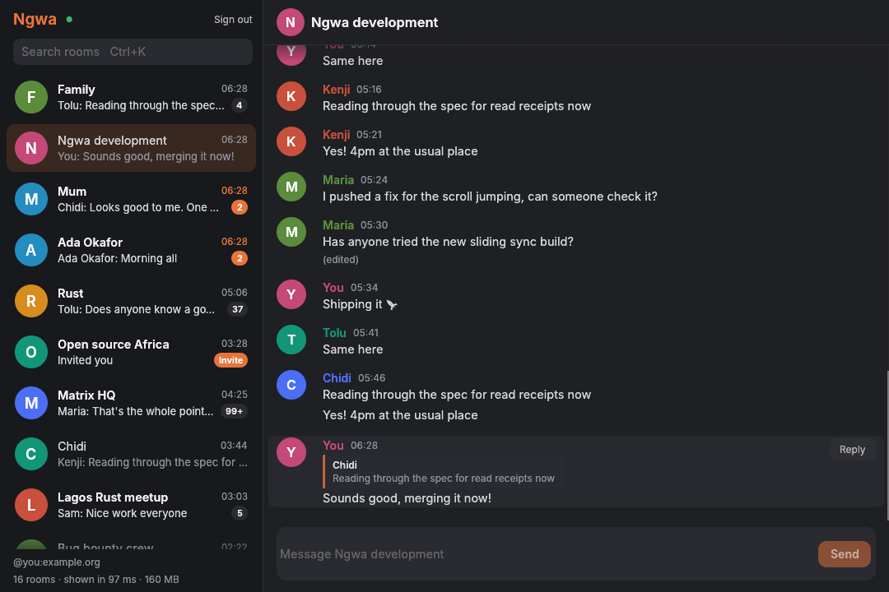

Ngwa
Igbo for quick, as in ngwa ngwa: hurry up.
A Matrix client that opens fast and stays light.
Free and open source. Version 0.1 works with unencrypted rooms; encrypted rooms and DMs arrive in 0.2.

Why Ngwa
No browser inside
Ngwa is written in Rust and draws its own interface. It doesn't ship a copy of Chrome the way web-based clients do.
Your rooms, right away
Sliding sync loads what's on screen first, so your room list appears in moments, even on a big account.
Open to everyone
Free to use, with every line of code on GitHub under the MIT and Apache licences. Works with matrix.org and other homeservers.
What 0.1 can do
Works now
- Sign in on matrix.org or your own homeserver
- A live room list with unread counts and search
- Read rooms and scroll back through their history
- Send messages and reply to them
- Accept or decline invites
Coming next
- End-to-end encryption, for DMs and private rooms
- Images and files
- Reactions, edits and threads
- Notifications
Download
| Windows |
ngwa-windows-x86_64.zip Windows 10 and 11. Unzip and run ngwa.exe. If SmartScreen appears, choose More info, then Run anyway.
|
|---|---|
| macOS |
ngwa-macos-universal.zip macOS 11 or later, Apple silicon and Intel. Move Ngwa to Applications. The first time, right-click it and choose Open. |
| Linux |
ngwa-linux-x86_64.tar.gz 64-bit Intel and AMD. Unpack, then run ./install-linux.sh to add Ngwa to your app menu.
|
Prefer to build it yourself? With Rust installed, run:
cargo install --git https://github.com/kingsmandralph/ngwa
Every release lists its changes and checksums on GitHub.